[SH4] The Meaning and Design of That Iconic Door
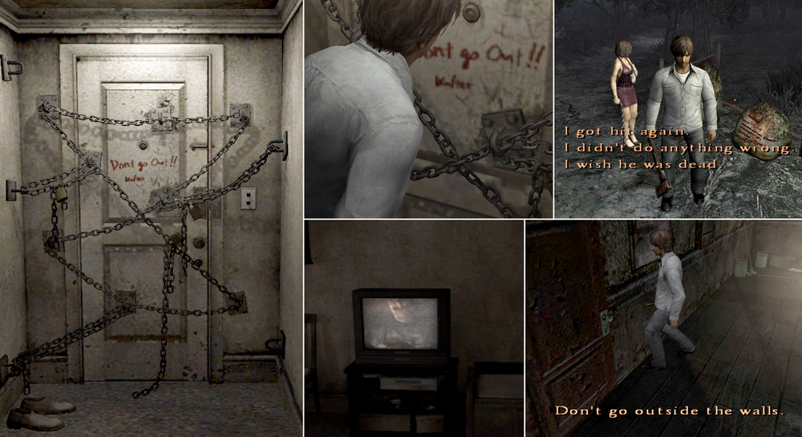
Let's talk about how brilliant the symbolism and design of this beloved door are.
![[SH4] The Meaning and Design of That Iconic Door](img/da38.png)
This is a mirror of the DeviantArt version linked above, provided as a backup and for easier access.

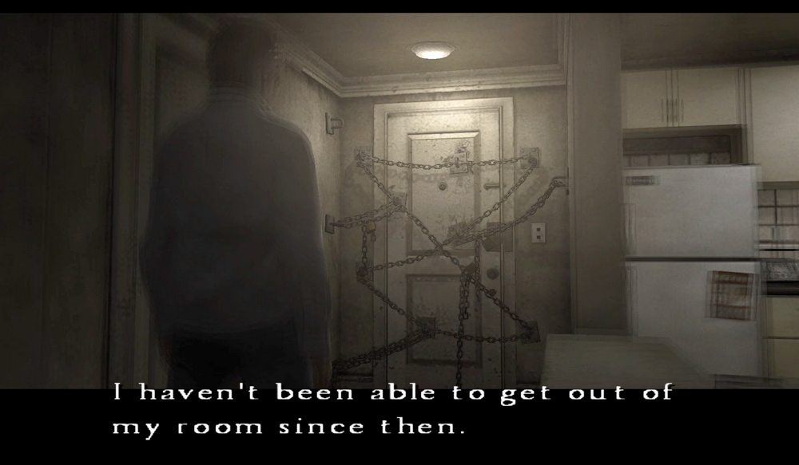
✅ Symbolism
A door chained shut from the "inside." Its impact and symbolic design are so wonderful that I've seen many homages to it in other works.
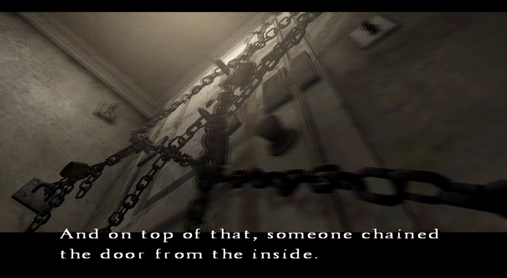
I've seen it in "The Short Message" as well.
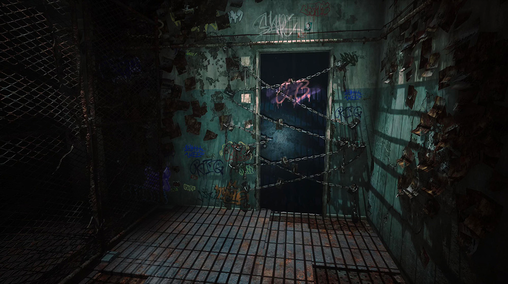
This design is also often seen as a motif in indie horror games, but in most cases it is treated symbolically as "sealing away the protagonist's past or trauma," like a representation of painful memories that have been locked away.
In SH4 too, ever since its release, there have been jokes such as "Henry's strong determination never to go outside and work lol," and there have also been more serious interpretations suggesting it symbolizes social isolation. There was also a theory that he himself was the culprit, staging everything on his own.
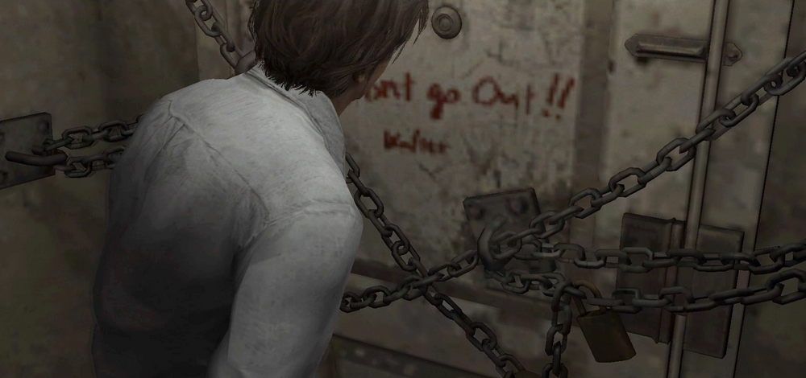
But in SH4, Henry doesn't have trauma. This is absolutely not a seal on his memories.
Rather, what this symbolizes is Walter. His life in the orphanage. The words written on doors and gates: "Don't go outside."
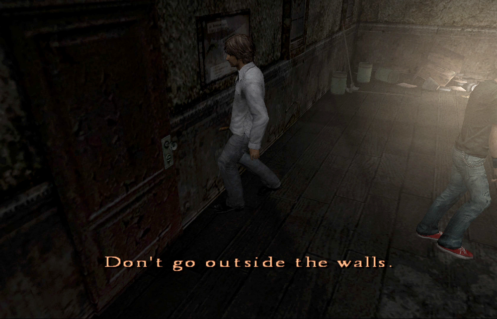
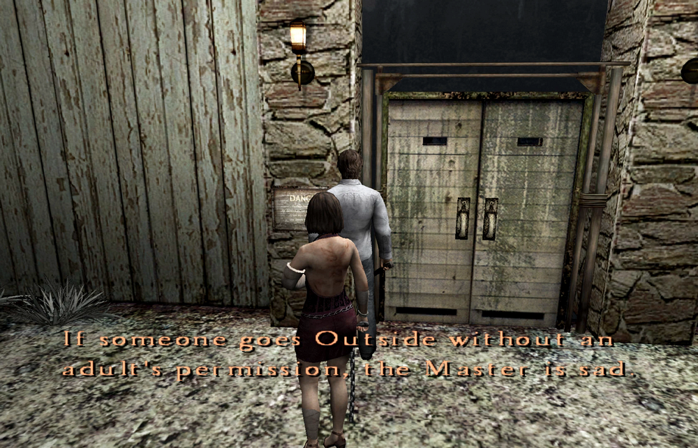
Additionally, the afterimages of the warden Walter feared appears outside the windows and on the television screen.
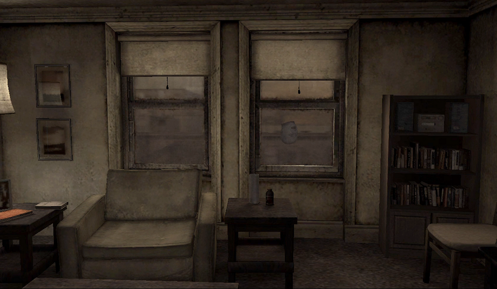
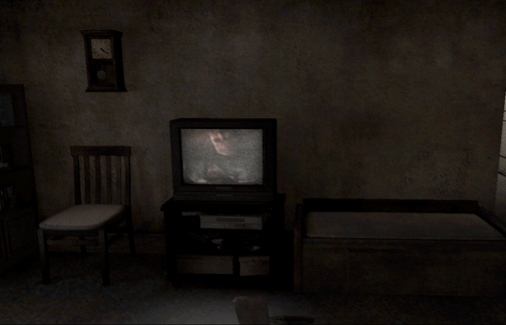
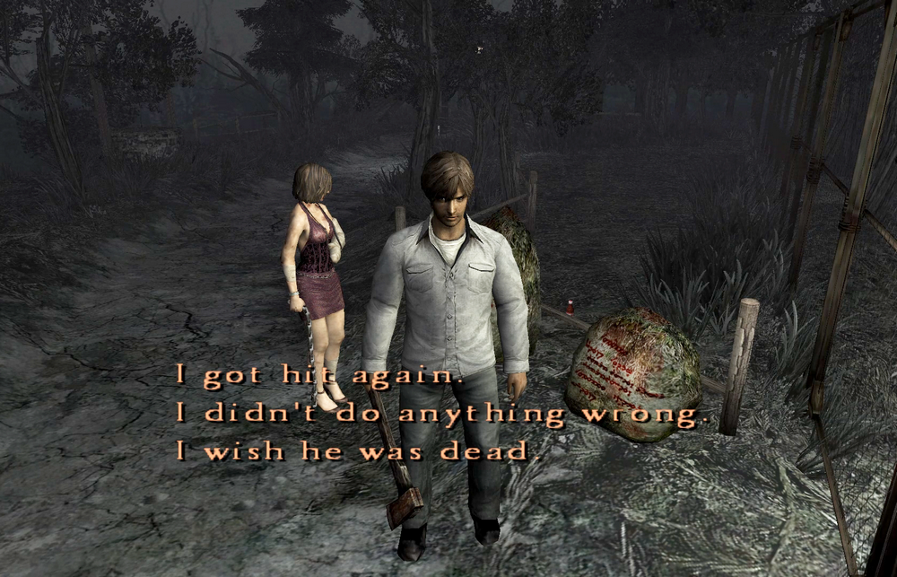
The voice that tells you it is always watching you.
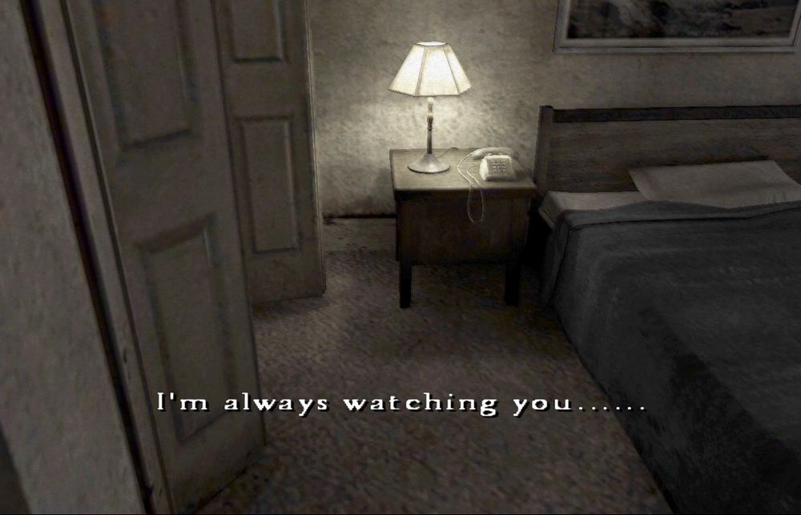
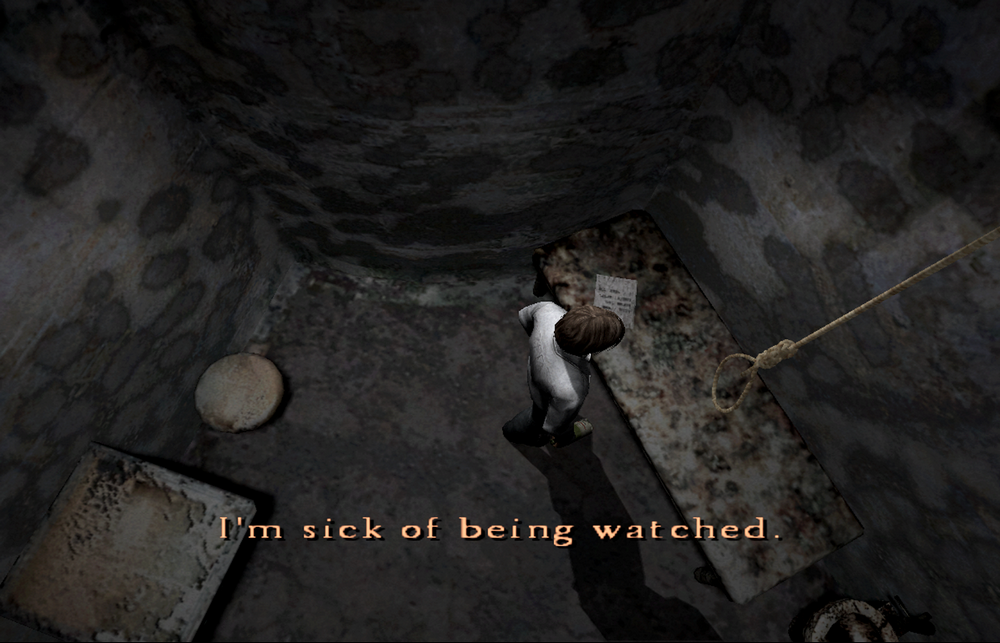
A mysterious lump of meat writhes in the fridge.
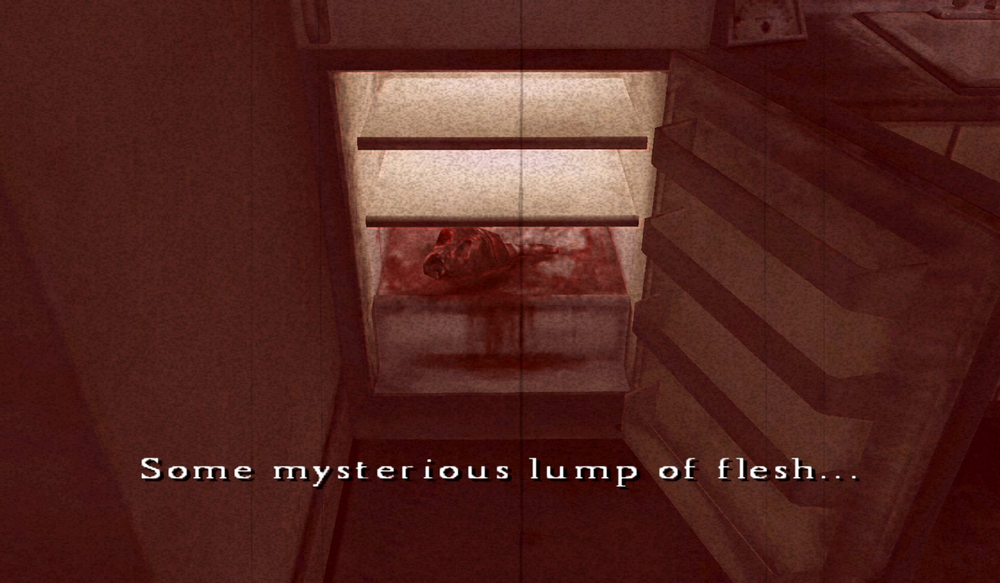
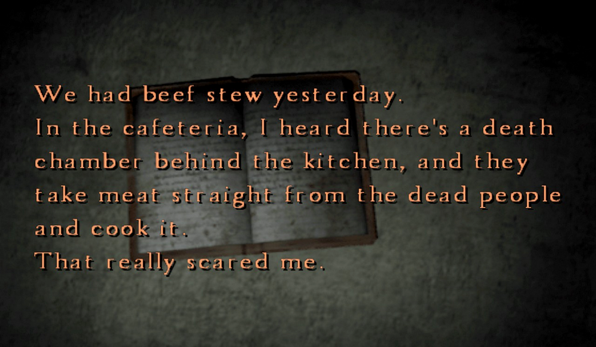
All the terrifying experiences that Henry goes through in Room 302 are made from fragments of Walter's childhood memories of fear, and moreover, from his actual lived experiences.
In that sense, compared to an easy "symbol of trauma," this game is much cleverer in its twists and more sophisticated, and I can't help but admire how incredible the scenario is.
✅ Design
And then, the design.
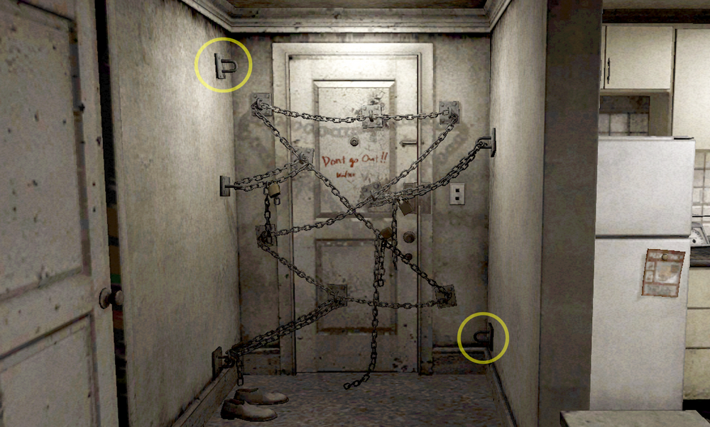
Did you notice that there are two hooks that aren't even used? It's fun to think about whether the "unnecessary hooks" were a mistake by Walter—like he just randomly added hooks and ended up with some extras.
If you read too much into it, this could be showing the Japanese concept of "wabi-sabi," the beauty of imperfection. Not everything needs a use. Well, since it was developed in Japan, I'm just saying it to sound plausible.
When I tried removing them, my eyes naturally just settled around the peephole. With the hooks in place, though, it feels unsettling. As horror game design, I think this sense of imperfection is beautiful.
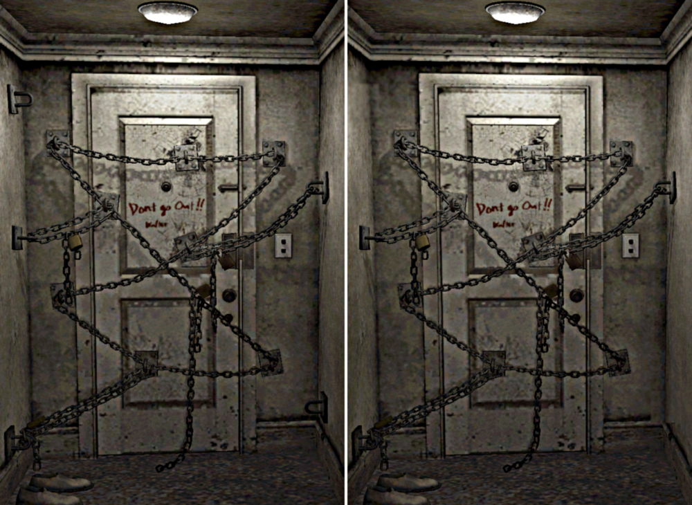
In any case, I think this design achieves perfect balance precisely because there are unused hooks.
That's why, no matter how many homages I've seen, none surpass this door. I truly think the person who designed it is remarkable!
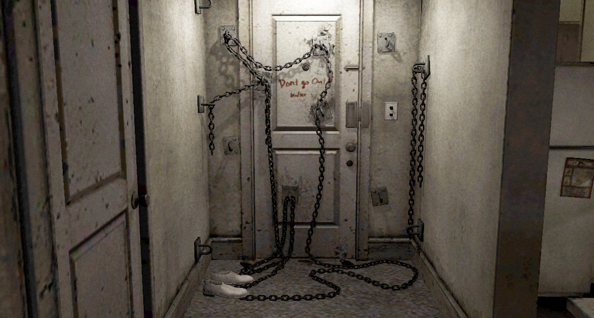
There's a cute little playful touch, too.